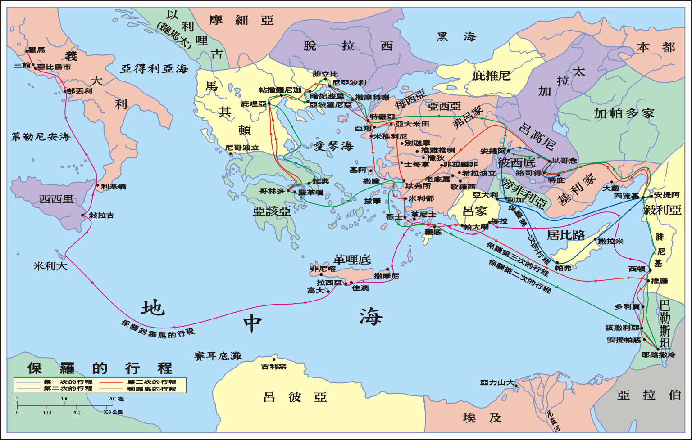

第七十一篇 借着保罗一班同工的职事，在外邦地的繁殖（三十七）
调速
读经：使徒行传二十八章一至三十一节。
在本篇信息中，我们要说到二十八章，使徒行传的最后一章。在二十八章一至十节，保罗到了米利大岛，并在那里行了许多神迹。然后在二十八章十一至三十一节，他到达罗马，结束第四次出外尽职的行程。首先他经过叙拉古、利基翁、部丢利、亚比乌市和三馆（徒二八11～16）。在罗马，他与犹太首领接触（徒二八17～22），并尽职事（徒二八23～31）。
到米利大岛
二十八章一、二节说，“我们既已安全得救，才认出那岛名叫米利大。土人待我们有非常的情分，因为当时下着雨，天气又冷，就生火接待我们众人。”二节和四节的“土人，”或作，化外人。未必是未开化的人，乃是既不说希腊话，又不说拉丁话的人。
三至五节说，“那时，保罗拾起一捆柴放在火上，有一条毒蛇因热出来，缠住他的手。土人看见那毒蛇悬在他手上，就彼此说，这人必是个凶手，虽然从海里安全得救，公理还不容他活着。保罗竟把那毒蛇甩在火里，并没有受伤。”四节和五节的“毒蛇，”直译，兽。但是医学作家用这辞指毒蛇。起先，因为保罗被毒蛇所咬，土人就认为他是个凶手。然而，如六节所说，他们至终改变了对他的想法：“土人等着看他肿起来，或是忽然仆倒死了，但等了多时，见他无事，就转念说，他是个神。”使徒不是好奇的土人所迷信的神，乃是在他的生活和职事中，将真神彰显出来。这位真神在耶稣基督里，经过成为肉体、为人生活、钉死十架、复活的过程，成了包罗万有的灵，活在使徒里面，并借着他活出来。
保罗在他书信里所记载的教训中，强调在灵里生活行事。在整个航程中，并现今在米利大岛上，保罗的确是在灵里生活行事。他所过的生活，的确是那成为肉体、钉死十架、复活、升天的基督。保罗的生活实际上就是赐生命之灵的彰显。在他日常生活的每个景况中，保罗都是他所传扬这位基督的彰显。他传扬那成为肉体、钉十字架、复活、升天而成为赐生命之灵的基督；在米利大岛上，他就是活这样一位成为包罗万有之灵的基督。保罗后来在腓立比一章二十、二十一节上半所写的话指明了这一点：“这是照着我所专切期待并盼望的，就是没有一事会叫我羞愧，只要凡事放胆，无论是生，是死，总叫基督在我身体上，现今也照常显大，因为在我，活着就是基督。”保罗只关心活基督并显大基督。在米利大岛上，保罗活基督并显大这位成为赐生命之灵的基督。我们读路加对保罗生活的记载，就看见他所活的，乃是包罗万有的灵，就是那成为肉体、钉死十架、复活、升天、被神高举之基督的终极完成。
七、八节说，“那地附近有些田产是岛长的，这人名叫部百流，他接纳我们，亲切的款待了三天。当时，部百流的父亲患热病和痢疾躺着，保罗进到他那里，祷告并按手在他身上，医好了他。“痢疾虽是普通的疾病，却很难医治。然而，保罗生活一直如同统领国度的王，现今成了医生，医治部百流的父亲。
九节接着说，“这样一来，岛上其余的病人也来得了医治。”这里我们看见保罗成了医生，甚至成了全岛的救主。凡被带到保罗这里的病人都得了医治。
在风暴的海上，主已经使保罗成为与他同船之人的主人（徒二七24），也成为他们生命的保证人和安慰者（徒二七22，25）。如今在平安的陆地上，主进一步使他不仅在迷信的人眼中成为神奇的吸引（徒二八3～6），也成为土人的医治者和喜乐（徒二八8～9）。在他漫长、不幸且受监禁的航程中，主保守使徒在祂的超越里，使他活出一种生活，远超忧虑的境域。这种生活是全然尊贵，有最高标准的人性美德，彰显最高超的神圣属性，与多年前主在地上所过的生活相似。这是耶稣在祂被神性所丰富的人性里，再次活在地上！这是从前活在福音书里那奇妙、超绝、奥秘的神人，借着祂许多肢体中的一个，在使徒行传里继续活着！这是成为肉体、钉死十架、复活、被神高举之基督的活见证人！保罗在他的航程里活基督，并显大基督（腓一20～21），难怪人对他和他的同伴多方尊敬（徒二八10），给与上等的礼遇和最高的敬意。
十节说，“他们又多方的尊敬我们，到了开船的时候，还给我们放上所需用的。”这节指明在米利大岛上的土人对待保罗和他的同伴，如同皇室的成员一般。保罗是王，而路加是皇室的一员。
按照十节，土人把航程所需用的放上船。主用他主宰的权柄供应食物给二百七十六人。任何一位君王都必须供应食物给他的子民。保罗是君王，从这些土人接受供给。然而，他并不亏欠他们，因为他医好了他们中间许多的病人。就某种意义说，这些人把航程所需要的食物供应放上船，以支付保罗。
到罗马，结束第四次的行程
从叙拉古到罗马
十一节说，“过了三个月，我们上了一只亚力山大的船，这船以丢斯双子为记，是在那岛上过了冬的。”丢斯双子，希腊文，Dioskouroi，指丢斯的双子迦斯托，Castor，和帕勒克斯，Pollux，其像固定在船尾上，作为水手的守护神。

在叙拉古停留三天后，他们到达利基翁，然后到了部丢利；在部丢利他们遇见弟兄们（徒二八12～14）。十四节下半路加说，“这样，我们来到了罗马。”在十五、十六节他说，“那里的弟兄们，一听见我们的事，便来到亚比乌市和三馆迎接我们，保罗见了他们，就感谢神，壮起胆来。当我们进了罗马，保罗蒙准和一个看守他的兵丁另住一处。”亚比乌市离罗马六十多公里，三馆离罗马四十多公里。
从罗马来的弟兄们热烈的欢迎，和在部丢利弟兄们爱心的关切（徒二八13～14），显出早期召会和使徒之间美丽的身体生活。这是在撒但所蒙蔽、人所居住的地上，属天国度生活的一部分。表面上，使徒是个在捆锁中的囚犯，进入撒但所霸占之帝国的黑暗首都；实际上，他是基督的大使，带着基督的权柄（弗六20，太二八18～19），在地上神的国中，有分于祂召会之身体生活里的另一部分。当他在撒但的帝国受到宗教的逼迫时，他在神的国中享受着召会生活。这对他是安慰，也是鼓励。
按照十五节，保罗见了弟兄们，就感谢神，壮起胆来。这指明使徒很有人性。他虽然得着主直接的鼓励（徒二三11），在航程中一直非常勇敢（徒二七22～25，33～36），然而，他仍因弟兄们热情的欢迎而壮胆。在保罗的航程中，基督带着祂神圣的属性，彰显在保罗那拔高且带着美德的人性里。保罗在逆境中，一直是显大基督（腓一20）。
保罗抵达罗马以前，那里的弟兄们听见他和他同伴的消息，就远至亚比乌市和三馆迎接他们。他们如何得到保罗的消息？这事很难下定案。可能有些从部丢利来的弟兄们（他们曾恳求保罗在那里住留七天），把消息带给在罗马的弟兄们，他们就来迎接他。重要的事乃是：在这里我们看见一幅古时召会生活的图画，这样的召会生活很有享受。今天我们需要有这种享受的召会生活，并且跟随这几节所陈明的榜样。
在二十八章，保罗要去看罗马的愿望得着实现。热中犹太教的人一直设法阻挠他到外邦人那里去，但主的主宰权柄却把他带到罗马。在古时，从耶路撒冷旅行到罗马是件大事，但主带保罗深入外邦世界，甚至进到罗马帝国的首都。保罗抵达罗马时，一定满了喜乐。外面他是在捆锁中，但里面他却满了荣耀和说不出来的喜乐。
与犹太首领接触并在罗马尽职事
保罗抵达罗马之后，立刻与犹太首领接触（徒二八17～22）。他这样作很有智慧。然后，保罗开始向他们尽职供应。当然，有人接受他的职事，也有人弃绝他的职事。
保罗在罗马，对罗马召会乃是加强，特别因为有许多犹太人得救了。保罗来到罗马，乃是在写罗马书之后不久；写了这封书信几年之后，他——作者——到了罗马。
二十八章二十三、二十四节说，“他们和保罗约定了日子，就有更多的人到他的住所来，保罗从早到晚对他们讲解，郑重见证神的国，引摩西的律法和众申言者的书，以耶稣的事劝服他们。他所说的，有的信服，有的不信。”在此保罗见证神的国。我们已经指出，神的国是使徒们傅讲的主题。这不是眼所能见物质的国，乃是神生命的国。这是基督作生命扩展到信徒里面，形成神在祂生命里管治的范围。
二十五至二十七节说，“他们彼此不合，就散了。散去以前，保罗说了一句话：圣灵借申言者以赛亚，同你们祖宗所说的话，是不错的，祂说，「你去对这百姓说，你们听是要听见，却绝不领悟；看是要看见，却绝看不透；因为这百姓心蒙脂油，耳听不灵，眼睛闭着；恐怕他们眼睛看见，耳朵听见，心里领悟，回转过来，我就医治他们。」”父神在以赛亚六章九至十节，向顽固的以色列人说过这话。子神在马太十三章十四至十五节，向弃绝祂的犹太人也引用过这话。现今灵神又借着使徒，向硬着心的百姓重复这话。这指明在神圣三一一切的行动里，以色列人向着恩典的神都是悖逆的。这使祂转向外邦人，借着复活和升天的繁殖，开展神的国，建造众召会，而完成祂新约的经纶（徒二八28）。
二十八章三十节说，“保罗在自己所租的房子里，住了足足两年，欢迎一切前来见他的人。”这段期间，使徒写了歌罗西书（参西四3，10，18）、以弗所书（参弗三l，四l，六20）、腓立比书（参腓一7，14，17）、腓利门书（参门l，9）。在腓立比一章二十五节，二章二十四节和腓利门二十二节，他盼望从监禁中得着释放。也许在这两年以后，他得了释放，就访问以弗所和马其顿（提前一3），在那里他也许写了提摩太前书。然后他访问了革哩底（多一5）、尼哥波立（多三12），在那里写了提多书；又访问了特罗亚、米利都（提后四13，20），也许在那里写了希伯来书。
三十一节说，保罗在罗马自己所租的房子里居住的两年中，“全然放胆宣扬神的国，并教导主耶稣基督的事，毫无阻碍。”神的国是使徒行传着重点之一。路加写的这本使徒行传，开始于神的国（徒一3），也结束于神的国。
保罗宣扬神的国，这乃是复活基督的繁殖。我们怎样得知？国度的宣扬是复活基督的繁殖，这个事实由三十一节“教导主耶稣基督的事”这句话得着证明。这指明神的国和主耶稣基督的事是并行的。将基督的事教导人，就是开展神的国。所以，神的国实际上就是复活基督的繁殖。
使徒行传 徒二八1至31及注
叁 繁殖 二1～二八31
二 在外邦地，借着保罗一班同工的职事 十二25～二八31
10 第四次的行程 二七1～二八31
d 到米利大岛 二八1～10
第 二十八 章
28:1 我们既已安全得救，才认出那岛名叫1米利大。
【注1】 或，马尔他。
28:2 1土人待我们有非常的情分，因为当时下着雨，天气又冷，就生火接待我们众人。
【注1】 或，化外人。4节者同。未必是未开化的人，乃是既不说希腊话，又不说拉丁话的人。
28:3 那时，保罗拾起一捆柴放在火上，有一条毒蛇因热出来，缠住他的手。
28:4 土人看见那1毒蛇悬在他手上，就彼此说，这人必是个凶手，虽然从海里安全得救，2公理还不容他活着。
【注1】 直译，兽。但是医学作家用这辞指毒蛇。也见于5节。
【注2】 希腊文，Dike，可能指希腊神话中掌管公理报应的女神。
28:5 保罗竟把那毒蛇甩在火里，并没有受伤。
28:6 土人等着看他肿起来，或是忽然仆倒死了，但等了多时，见他无事，就转念说，他是个1神。
【注1】 使徒不是好奇的土人所迷信的神，乃是在他生活和职事中，将真神彰显出来。这位真神在耶稣基督里，经过成为肉体、为人生活、钉死十架、复活的过程，成了包罗万有的灵，活在使徒里面，并借着他活出来。
28:7 那地附近有些田产是岛长的，这人名叫部百流，他接纳我们，亲切的款待了三天。
28:8 当时，部百流的父亲患热病和痢疾躺着，保罗进到他那里，祷告并按手在他身上，医好了他。
28:9 这样一来，岛上其余的病人也来1得了医治。
【注1】 在风暴的海上，主不仅使保罗成了与他同船之人的主人（二七24），也使保罗成了他们生命的保证人和安慰者（二七22，25）。如今在平安的陆地上，主不仅进一步使他在迷信的人眼中成为神奇的吸引（3～6），也使他成为土人的医治者和喜乐（8～9）。在他漫长、不幸且受监禁的航程中，主保守使徒在祂的超越里，使他能活出一种生活，远超忧虑的境域。这种生活是全然尊贵，有人性美德的最高标准，彰显最高超的神圣属性，与多年前主在地上所过的生活相似。这是耶稣在祂被神性所丰富的人性里，再次活在地上！这是从前活在福音书里那奇妙、超绝、奥秘的神人，借着祂许多肢体中的一个，在本书里继续活着！这是成为肉体、钉死十架、复活、被神高举之基督的活见证人！保罗在他的航程里活基督，并显大基督（腓一20～21），难怪人对他和他的同伴多方尊敬（10），给与上等的礼遇和最高的敬意。神所差派的大使，理当受人这样的礼遇并尊敬。
28:10 他们又多方的尊敬我们，到了开船的时候，还给我们放上所需用的。
e 到罗马，结束第四次的行程 二八11～31
(一) 从叙拉古到罗马 11～16
28:11 过了三个月，我们上了一只亚力山大的船，这船以1丢斯双子为记，是在那岛上过了冬的。
【注1】 希腊文，Dioskouroi，指丢斯的双子迦斯托，Castor，和帕勒克斯，Pollux，其像固定在船尾上，作为水手的守护神。
28:12 到了叙拉古，我们停泊三日。
28:13 又从那里绕行，来到利基翁。过了一天，起了南风，第二天就来到部丢利，
28:14 在那里遇见弟兄们，恳求我们与他们同住了七天；这样，我们来到了罗马。
28:15 1那里的2弟兄们，一听见我们的事，便来到3亚比乌市和4三馆迎接我们，保罗见了他们，就感谢神，5壮起胆来。
【注1】 即罗马。
【注2】 从罗马来的弟兄们热烈的欢迎，和在部丢利弟兄们爱心的关切（13～14），显出早期召会和使徒之间美丽的身体生活。这是在撒但所蒙蔽、人所居住的地上，属天国度生活的一部分。表面上，使徒是个在捆锁中的囚犯，进入撒但所霸占之帝国的黑暗首都；实际上，他是基督的大使，带着基督的权柄（弗六20，太二八 18～19），在地上神的国中，有分于祂召会之身体生活里的另一部分。当他在撒但的帝国受到宗教的逼迫时，他在神的国中享受着召会生活。这对他是安慰，也是鼓励。
【注3】 离罗马六十多公里。
【注4】 离罗马四十多公里。
【注5】 这指明使徒很有人性。他虽然得着主直接的鼓励（二三11），在航程中一直非常勇敢（二七22～25，33～36），然而，他仍因弟兄们热情的欢迎而壮胆。在保罗的航程中，基督带着祂神圣的属性，彰显在保罗那拔高且带着美德的人性里。保罗在逆境中，一直是显大基督（腓一20）。
28:16 当我们进了罗马，保罗蒙准和一个看守他的兵丁另住一处。
(二) 与犹太首领的接触 17～22
28:17 过了三天，保罗召集犹太人的首领来。等他们到齐了，就对他们说，1诸位，弟兄们，我虽没有作什么事干犯本国的百姓，或祖宗的规例，却成了囚犯，从耶路撒冷解到罗马人的手里。
【注1】 见一16注1。
28:18 他们审问了我，就愿意释放我，因为在我身上并没有该定死罪的。
28:19 无奈犹太人不服，我才被迫上诉于该撒，并非有什么事要控告我本国的百姓。
28:20 为这缘故，我恳求你们来见面谈论；我原是为了以色列所盼望的，才戴上这锁炼。
28:21 他们对他说，我们并没有接到从犹太来论你的信，弟兄中也没有人来报告，或说到你有什么1不好。
【注1】 直译，邪恶。
28:22 但我们认为应该听听你怎样想，因为我们晓得，这个教派是到处遭反对的。
(三) 在罗马的尽职 23～31
28:23 他们和保罗约定了日子，就有更多的人到他的住所来，保罗从早到晚对他们讲解，郑重见证1神的国，引摩西的律法和众申言者的书，以耶稣的事劝服他们。
【注1】 见一3注4。
28:24 他所说的，有的信服，有的不信。
28:25 他们彼此不合，就散了。散去以前，保罗说了一句话：圣灵借申言者以赛亚，向你们祖宗所说的话，是不错的，祂说，
28:26 “1你去对这百姓说，你们听是要听见，却绝不领悟；看是要看见，却绝看不透；
【注1】 父神在赛六9～10，向顽固的以色列人说过这话。子神在太十三14～15，向弃绝祂的犹太人也引用过这话。现今灵神又借着使徒，向硬着心的百姓重复这话。这指明在神圣三一一切的行动里，以色列人向着恩典的神都是悖逆的。这使祂转向外邦人，借着复活和升天的繁殖，开展祂的国，建造众召会，而完成祂新约的经纶（28）。
28:27 因为这百姓心1蒙脂油，耳听不灵，眼睛闭着；恐怕他们眼睛看见，耳朵听见，心里领悟，回转过来，我就医治他们。”
【注1】 即变成迟钝。
28:28 所以你们当知道，神这救恩如今已传给外邦人，他们也必听。
28:29 1保罗说了这话，犹太人中大起争论，就都走了。
【注1】 许多古卷无本节。
28:30 保罗在自己所租的房子里，住了足足1两年，2欢迎一切前来见他的人，
【注1】 这段期间，使徒写了歌罗西（参西四3，10，18）、以弗所（参弗三1，四1，六20）、腓立比（参腓一7，14，17）、腓利门（参门1， 9）。在腓一25，二24，门22，他盼望从监禁中得着释放。也许在这两年以后，他得了释放，就访问以弗所和马其顿（提前一3）。他也访问了革哩底（多一5）、尼哥波立（多三12）、特罗亚、米利都（提后四13，20）。见提后四6注2。
【注2】 意以欢迎接待，与路八40者同。
28:31 1全然放胆宣扬2神的国，并教导主耶稣基督的事，毫无阻碍。
【注1】 使徒第四次出外尽职的旅程，开始于二七2，结束于此。
【注2】 神的国是本书着重点之一。路加的著作开始于神的国（一3），也结束于神的国。
本书没有结束，乃是敞口待加的。这必是因为圣灵借着基督的信徒，传扬基督，使基督得到繁殖、扩增并普及的工作，还没有完毕，还需要很长一大段时间的继续。这种使基督繁殖、扩增并普及的福音工作，乃是照着神新约的经纶，为神产生许多的儿子（罗八29），作基督的肢体，构成基督的身体（罗十二5），以完成神永远的计划，成全祂永远的旨意。这是此书以后，二十一卷书信，和一卷启示录，所接着详尽启示的。基督这样的繁殖、扩增所产生的召会，乃是神在基督里得彰显并掌权的范围，所以就成为神的国。神的国乃是由神的生命，随着基督的繁殖、扩增而生长出来并普及的。使徒行传是基督的普及，也是神国的普及，因为神的国乃是基督的扩大。此书内所广传的福音，是以基督为福音（五42），是基督的福音，也是以神的国为福音（八12），也是神国的福音。这福音的传扬，一直继续向前，直到全地都成了基督的国（启十一15）。
在四福音是神成为肉体、经过人生、死而复活，完成了基督，就是三一神的化身（西二9）。到使徒行传是神这化身成为赐生命的灵（林前十五45），将基督普及到信祂的人里面，也就是将经过种种过程的三一神，作到祂所拣选、救赎、并变化的人里面，使神借着这些人所构成的召会得着彰显，其终极结果乃是要来在永世里的新耶路撒冷，作神完满并永远的彰显。那也将是神永远的国，作祂在永世里，在祂的神圣生命中，掌权的范围，直到永永远远。这该是今天一切福音传扬的实际和目标。